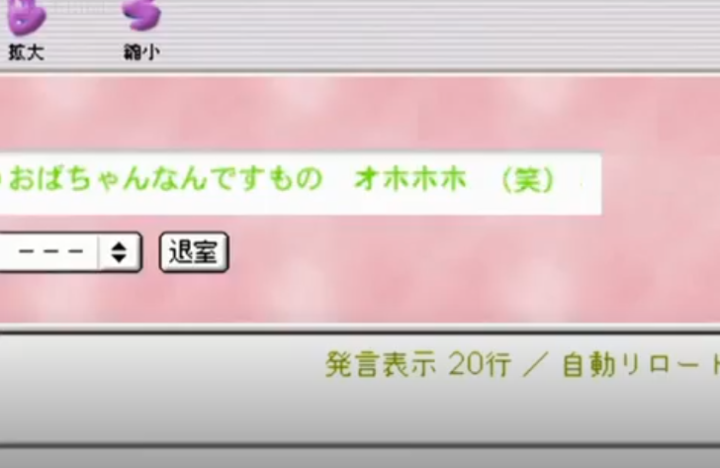
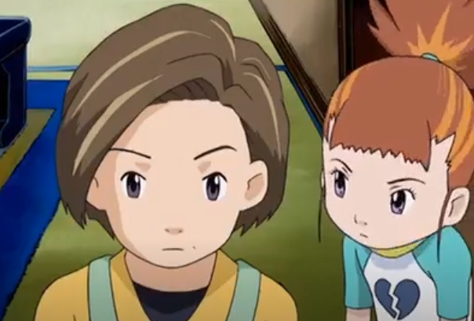
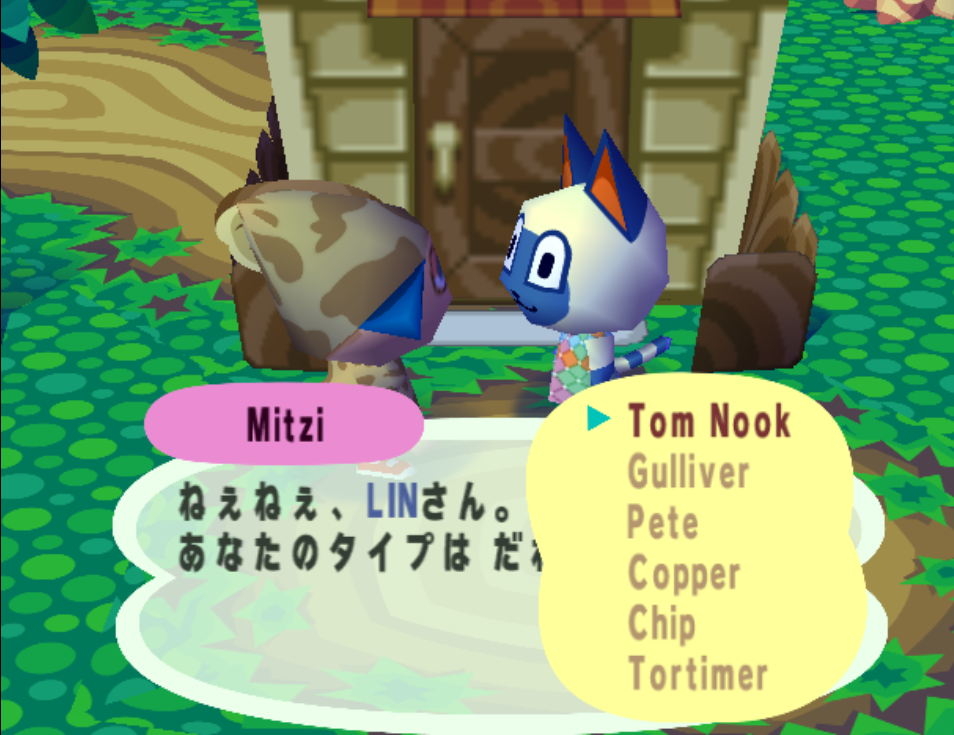

favorites
my favorite things in media
Because it wouldn't be a neocities page without anime screenshots! A running, but not all-encompassing list, of pieces of media that have made an impact on me in one way or another. To be honest, I don't spend as much time watching movies/anime/games as I probably should, but I wouldn't feel right not sharing these things on monar.
anime
Dennou Coil is criminally underrated. I don't think many people are taking TV recommendations from neocities pages, but I hope you'll consider watching this.
It was recommended to me a few years ago by a friend who promised I would like it. I spent a little too long getting around to watching it, but when I finally did, Dennou Coil resonated with me on a deep level I didn't expect.
Dennou Coil is set in a time period similar to our own, with one key technological advancement differentiating it's world from ours: AR glasses are a semi-ubiquitous tool. People interact with digital objects for work and convenience, but for the middle school aged main characters of Daikoku City, the virtual overlay on the world is an endless source of amusement.
Dennou Coil's writing and the AR technology itself is very belivable. Suspension of disbelief is still necessary to an extent, but the writers very clearly thought out how a technology like this would work on a technical level. It's amazing worldbuilding, and it draws very obvious parallels to our non-AR integrated internet experience, making it very easy to enjoy if you're a technical person. This aspect of the show isn't stifling, either- it's woven naturally into the story's events. The kids discover a conspiracy, tackle serious challenges, and experience a significant story arc, but under the hood, Dennou Coil is still a story about children, which I feel adds to it's appeal. It's hard to talk about the show's specifics without spoiling everything- things really pick up in the second half. You'll see what I mean.
Dennou Coil's themes, I think, are what raised it beyond being just a good show for me. Without giving too much away, Dennou Coil tackles the distances between people despite the advancement of technology, how "real" or "not real" the virtual experiences and worlds are, and the nuances of being a child utilizing such a powerful tool in a very tangible way. I think this is very appealing for children and adults that grew up on our internet and have had to ask themselves these questions for the first time as part of growing up in the 21st century.
At the very least- watch it for the dog.
You'll have to right click -> view image to get the full res on these. I know you can do it.
Digimon Tamers is just a lot of fun. I watched this one more recently and was really surprised by how appealing it was! If you like Dennou Coil, Lain, and cute monsters, you'll like this show.
Digimon tamers doesn't shy away from meta internet references.
Planetes is a unique show about the gritty, "uninteresting" details of a daily life living and working in space where space travel has lost it's glimmer and become more comparable in status to flying a plane on earth today. The show is silly, and the main characters have an arc based in romance. It's not a perfect show, but it gets a lot right. Planetes' art captures a lot of what I want to be able to portray in my own work.
I probably don't need to tell you about this one, but Serial Experiments Lain is a classic. Some people are into it because it's avant-garde, edgy, and has a funny aesthetic. Other people are into it because it's avant-garde, edgy, has a funny aesthetic, and watched it more than once to figure it out. Both groups are exclusively nerds. And, do you know what? That's totally okay. Watch it once, then think about it a bit, forget about it, and watch it again. I love Lain and I think you will too.
Lain's themes are serious, relatable, and often prophetic. Hopefully Despera comes out someday.
Steins;Gate is, flaws aside, just a really good show. However, full disclosure, the main character's treatment of Rukako's character has not aged well at all and will probably bother you significantly. I am biased for the show- my friends and I watched it in-between classes at school. If you're not justifying the bad bit, you can watch this show in good faith and experience one of the best sci-fi narratives in fiction. The characters have awesome chemistry and the group of young adults together is just so much fun to watch onscreen.
I am mad scientist, so cool! Tu-tu-ruuuu!
Easy breezy!
i also really like the show miss kobayashi's dragon maid but don't tell anyone
writing
A small selection of books I've enjoyed that I think you'll like too.The Hardware Hacker by bunnie. I am pretty sure I recieved this book as a christmas gift at some point, but I'm not sure from who. Regardless, they seem to have been able to read me very well, because this book is super cool. Coincidentally, I had already encountered bunnie's work in the past, but hadn't noticed until I was finished with the book. bunnie's work in the electronics and hacking world is prolific, and this work is an insanely fascinating look into the world that creates the hardware we use on a daily basis. The book is more about product development than hardware hacking in the typical sense, but the way bunnie approaches the commercial world is very clearly the hacker's state of mind. Smart dude, smart book, learned a lot.
An Astronaut's Guide To Life On Earth by Colonel Chris Hadfield was a book that came into my life at the right time. Hadfield is a true individual made of the classic "right stuff". The book is chock-full of space agency details, but more importantly, the book focuses on teaching you valuable lessons that you can apply in your daily life. Awesome book. I also loved the book Endurance by Scott Kelly- it focuses more significantly on the process of going to space, and honestly, I live for that stuff. But if you're looking to take away real lessons from a book, An Astronaut's Guide is the way to go.
What If? by Randall Munroe. XKCD is a good webcomic, but What if? takes the brand of humor and love of scientific inquiry to a different level. It's a blast to read.
Hidden Figures by Margot Lee Shetterly is amazing. It's really a book about social history with plenty of space program history to boot. It's a reminder that NACA and segregation aren't a distant memory, but even moreso, I was so consistently inspired by the women that came before us in science and technology. I have a lot more to learn about the women from this era. I'm planning on reading Katherine Johnson's book, Code Girls, and Rise Of The Rocket Girls next.
games
Portal and Portal 2 are probably the best games I have ever played in my life. Everyone has different tastes, I know- but I think these games might actually be near-flawless. They go on sale for a few dollars at most in a bundle during the Steam Summer Sale. Do yourself a favor and play Portal! Say hi to the companion cube for me!
Animal Crossing may have saved my life at a point in time. The forced, crawling pace of New Leaf matching the rhythm of an alternate life is frustrating to players that want to sit down and actively engage in a game, but for me, it has consistently been a perfect oasis from the stress of daily life- a sandbox where you have control over every aspect of your day with just enough randomness to make the world feel alive. The new entry, Animal Crossing: New Horizons, is very good, but ditches the 'forced pacing' for a more gamified experience. On one hand, it's the most consistently fun Animal Crossing formula, but on the other, you lose a little bit of charm. Regardless, I hope this franchise continues well into the future (and ditches the new update model.)
I tried out the Japan-exclusive Animal Forest e+. The dialogue is funny.
Pokemon, generations 1 through 6 and the Pokemon TCG. Oh, Pokemon. In my short life, I have likely played an amount of Pokemon that could be described as worrying. I was really into playing the game competitively in middle school, and when I was younger than that, I made friends, strengthened relationships, and experienced raw wonder with Pokemon SoulSilver and the TCG. Sadly, I do not think the more recent installments hold up. Gen 7 just wasn't my thing (which is fine) and Gen 8 does not seem to have had development time. Despite all the doom and gloom, Pokemon is fun and I would say either Platinum, HG/SS, or B/W is a 'must play' title.
Half-Life, giving people a reason to be jealous of VR since 2020.
Super Mario Galaxy 1 & 2 are the most fun I've ever had with platformers. It may be a degree of nostalgia- 2007 was a long time ago- but these are genuinely good games with great level design and tons of content packaged within.
A few other favorites: Monster Hunter, Team Fortress 2, Minecraft, Sim City 3000, Taiko no Tatsujin.
other things
onscreen entertainment: 80's sci-fi/robot movies, stupid movies like wayne's world, wargames, bill and ted, ferris bueller. space stuff in the realm of star trek: the original series, and apollo 13
online creators: cgp grey, neil cic, nilered, william osman, simone giertz, YTPMV creators, jerma985, journey to the microcosmos, life in jars?, AvE, desinc, wayneradiotv fax stream, so, so, so many other talented people. the list is so long
I also love: vsynth producers (powapowap, n-buna, sasakure.UK, harufuri, kairiki bear, inabakumori, x髥莏, wotaku, wadatakeaki, GYARI, many others), my internet friends from niche corners of the web, and you.